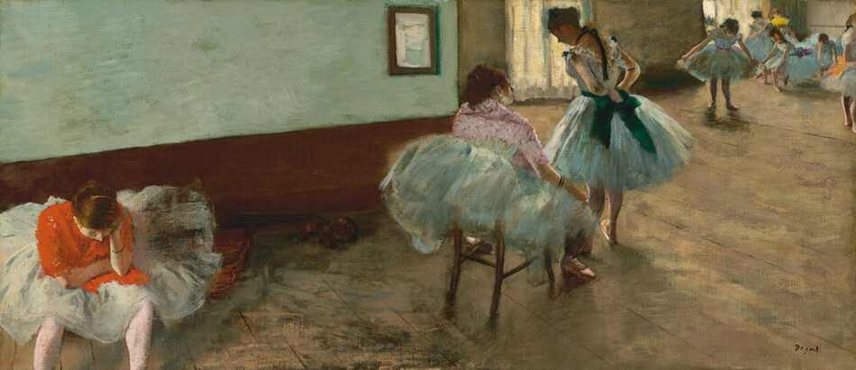

What Our Project Studies
How Arts Participation affects sociodemographics in the US

PARTial Access focuses on how participation in the arts varies by race and ethnicity, gender, education level, and income in the United States in 2017. We are arguing that there isn’t just one arts participation gap; the patterns we see from our data depend on which activity we look at and which groups we compare. Our main source is the 2017 Survey of Public Participation in the Arts (SPPA), conducted by the U.S. Census Bureau for the National Endowment for the Arts from 2017. The survey lets us compare people’s backgrounds with the different ways they reported participating in the arts. Our dataset provides a large amount of information from respondents such as their demographics (race and ethnicity, gender, education level, and income) and the specific arts activities they participated in. In addition to our primary data source, we have several secondary sources talking about specific fields we want to focus on.
Arts participation has been a deeply researched topic and discussion for those in academia. Researchers agree that more research needs to be conducted in order for more conclusions to be drawn about public arts participation, particularly in finding a way to create more equity within access to art. Our sources conclude that race, education, social class, and other factors do affect arts participation. While it seems to show that sociodemographics have an influence on how much art is participated in by each individual, the question still remains on whether the childhood experiences of arts exposure and participation help to determine adulthood participation. Secondary research from different studies helps to show that, in childhood experiences, in-school participation remains about the same for everyone, while out-of-school participation relies a lot on sociodemographics, which can then be used to help reveal any remaining questions about what next needs to be researched about arts participation.
Art access historically has been seen as a luxury. It is not often discussed how socioeconomic factors bar greater populations from participating in the arts. Although it has been researched, it is not something the average person would be educated on. By creating this project, we have an opportunity to inform people of these factors that are commonly overlooked and seen as the norm. As well as discover more factors that could possibly affect people's participation in the arts. We are investigating factors and patterns seen between populations and their participation that could explain that it might not just be that some people don't like art or don't want to participate, that there are barriers that restrict participation in public arts and art access.
How does the participation in the arts affect sociodemographics in the US? Being able to answer this question would allow for researchers to look and be able to push for equity and change. Data feminism was a big concept within digital humanities and the ability to acknowledge the history of oppression and bias to continue forward and stress for equity in the fields. PARTial Access strives to strengthen the argument of data feminism by looking at education and economic biases, as well as other sociodemographics in order to understand the historical oppression that may have taken place for not everyone to participate in the arts. Finding that correlation and leaving it up to researchers would allow for more studies in this field and for an equitable solution to take place.